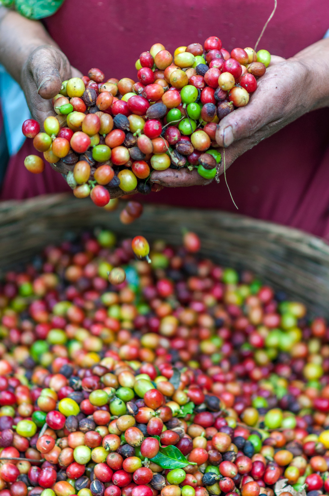

Learn How To Brew Coffee
How To Make Cold Brew Coffee In A French Press

Cold brew coffee has never been so popular, to be honest, I can’t remember a time when so many bearded, tattooed baristas were trying to upsell this rejuvenating elixir in their trendy coffee shops.
Best Coffee Gear And Accessories
Best Budget Friendly Coffee Grinders

If you’re serious about coffee, it goes without saying that you should already be grinding your coffee beans at home.
Everything About Coffee Beans
What Is Barrel Aged Coffee? Everything You Need To Know
It seems like a day doesn’t go by without another coffee trend being concocted by a bearded barista in some high street coffee shop. Sure, some ideas are pretty innovative
Learn About Coffee
What Is A Lungo? Understanding Your Espresso Coffee

Espresso, Ristretto, and now Lungo? It can all get a bit confusing with so many different coffee drinks being touted at your local coffee shop. What exactly is a Lungo?.